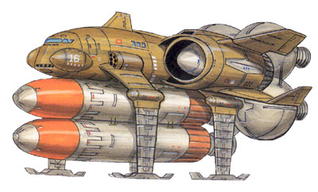

| Public Missile Boat |
|
|  | |
General and Technical Data |
|
|
Unit Type: assault boat Operator: Earth Federation Propulsion: 4 x rocket engine Fixed armaments: 2 x large missile; 2x 6-tube missile launcher, 2 rounds each; 1x 4-tube missile launcher, 1 round. Technical and Historical Notes The somewhat ungainly Public missile boat started its existance as a Colony Corporation maintainence vehicle. The small shuttle-like craft was intended chiefly for use in transporting colony workers from place to place on a worksite, speeding production and conserving resources. Following the end of the Lourm Campaign, the power vacuum created in space by the destruction of most of the EF Space Force forced them to fall back on more erratic means of delivering firepower without the use of their once-mighty fleet. They took the design of the Colony Corporation shuttle and incorporated it as a combat unit. The Public-class is became known was an interesting unit in its own regard. Intended for the sole purpose of attacking large targets, its armament are a pair of enormous anti ship missiles as well as a number of smaller, anti mobile suit missiles. The Public sports four huge rocket engines, giving it great speed, but it lacks armor and maneuverability. It's not really designed as a frontline combat unit, but more of a suprise attack vehicle with a substantial punch. |
 RPG quick stats sheet
RPG quick stats sheet